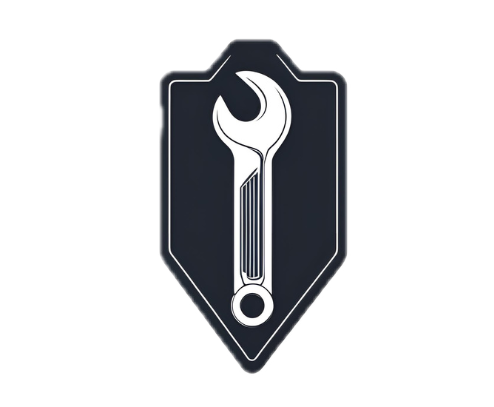
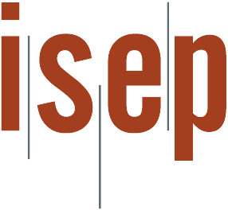

Bem-vindo ao Pit Stop Pro
Você deseja iniciar o diagnóstico?
▶

Pergunta 1: Quais os problemas que mais afetam o seu carro?
Motor com ruído estranho
Freios desgastados
Consumo elevado de combustível
Bateria descarregando rápido
Próximo/Confirmar
